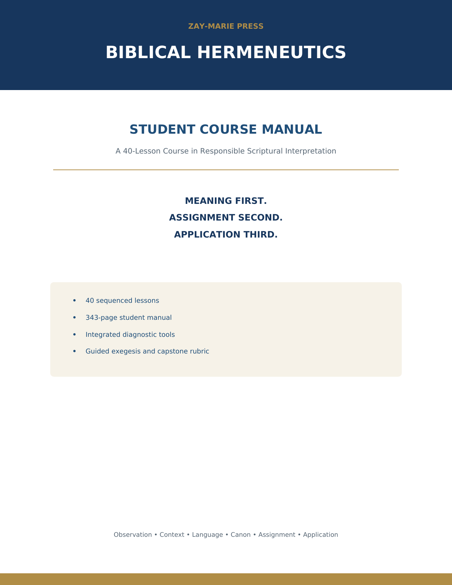
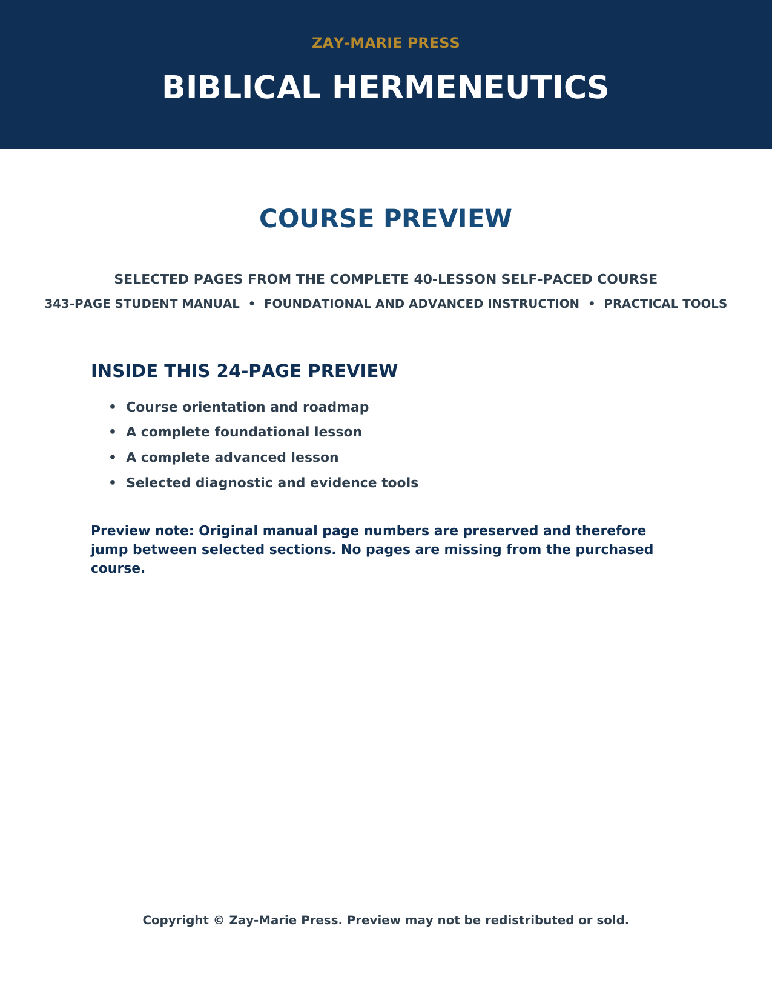

STEP 1
Meaning First
Establish what the passage communicates in its literary, historical, grammatical, and canonical context.

Interpret Scripture with a method you can explain, test, and defend.
A complete evidence-first course that trains serious students to establish meaning in context, determine proper assignment, and make legitimate application—without requiring adoption of a proprietary interpretive model.
The goal is not merely to collect interpretive terminology or reproduce an instructor’s conclusions. Students learn to observe carefully, identify the controls that materially govern a passage, distinguish evidence from inference, evaluate alternative readings fairly, and defend conclusions from Scripture.
Establish what the passage communicates in its literary, historical, grammatical, and canonical context.
Determine the audience, authority, promise, commission, identity, or obligation that governs the passage.
Make a legitimate application without transferring another audience’s distinctive program or obligation.
Identify material controls involving context, language, literary form, history, canon, doctrine, audience, and assignment.
Distinguish observation from inference and grade conclusions according to the strength of their evidence.
Evaluate competing interpretations without circular reasoning or caricaturing responsible alternatives.
Test cross-references, typology, and doctrinal claims after interpreting each passage in its own context.
Classify applications responsibly as direct governing, principled, historical/doctrinal, or illegitimate transfer.
Complete and defend an independent exegesis using a transparent evidence ledger and capstone rubric.
| Part | Lessons | Primary focus |
|---|---|---|
| I | 1–4 | Foundations: what it means to interpret Scripture |
| II | 5–8 | Observation: learning to see what the passage says |
| III | 9–12 | Contextual interpretation |
| IV | 13–16 | Language and authorial intent |
| V | 17–20 | Literary interpretation: reading Scripture according to its form |
| VI | 21–24 | Literary forms and canonical correlation |
| VII | 25–28 | Prophecy and canonical development |
| VIII | 29–32 | Doctrine and biblical assignment |
| IX | 33–36 | Mystery and Acts chronology |
| X | 37–40 | Application and independent mastery |
Record major claims, controlling evidence, counterevidence, inferential steps, and confidence levels.
Classify passages and claims without letting one attractive feature control the whole conclusion.
Integrate the course controls in a structured interpretation of an extended biblical passage.
Evaluate independent exegesis through ten transparent criteria and a 100-point scoring structure.
This course teaches sound hermeneutical method. It does not require the student to adopt the Acts Overlap model or any other proprietary chronology. Where proposed frameworks differ, the student is trained to identify assumptions, examine cumulative biblical evidence, test counterevidence, and defend only what the text supports.
Customer packages contain protected PDF files. Editable production files are not included. The Instructor and Answer Guide is delivered only with the Instructor Edition and must remain restricted from student access.
The controlled 24-page preview includes selected orientation pages, one complete foundational lesson, one complete advanced lesson, representative evidence and diagnostic tools, and preserved page numbers from the full manual.

It is a complete 40-lesson self-paced course with sequenced instruction, written exercises, diagnostic tools, milestone work, and a capstone evaluation.
No formal degree is required. The course is written for serious non-specialists while providing undergraduate-level substance and cumulative skill development.
Choose a focused 10-week pace, a recommended 20-week pace, or an extended 40-week pace. The planner supports all three.
No. It teaches students to evaluate interpretive systems and proposed chronologies according to textual evidence and responsible hermeneutical controls.
An individual purchaser may print one working copy for personal use. Redistribution, shared-drive access, and group copying require written permission.
Choose the Instructor Edition for restricted teaching and evaluation materials. Each student needs authorized access unless a separate group license is provided.
Build a method that returns every conclusion to the evidence of Scripture.